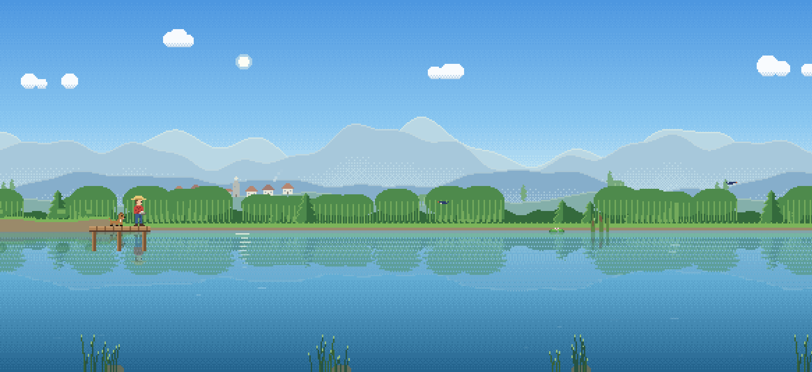
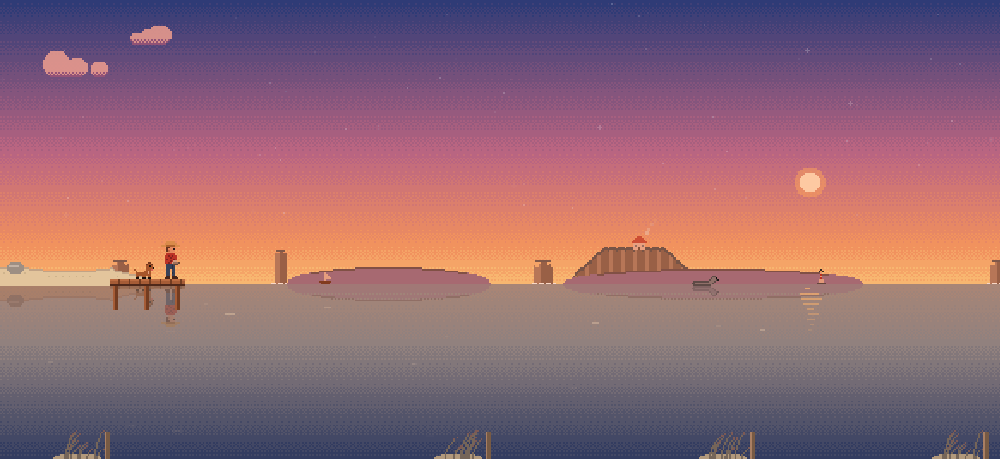
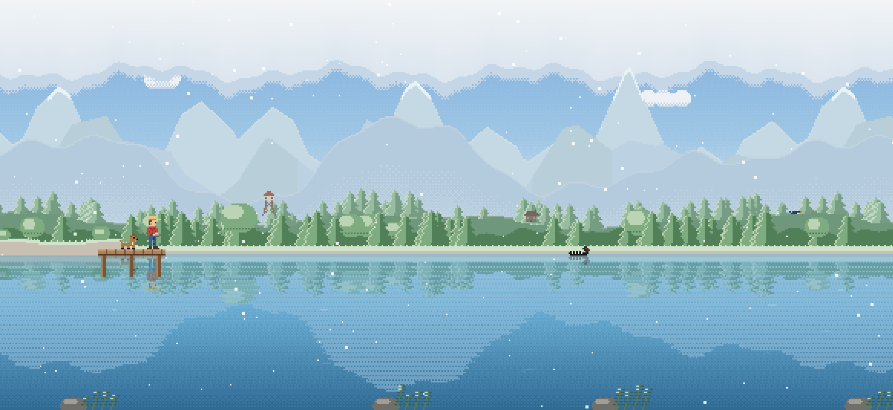
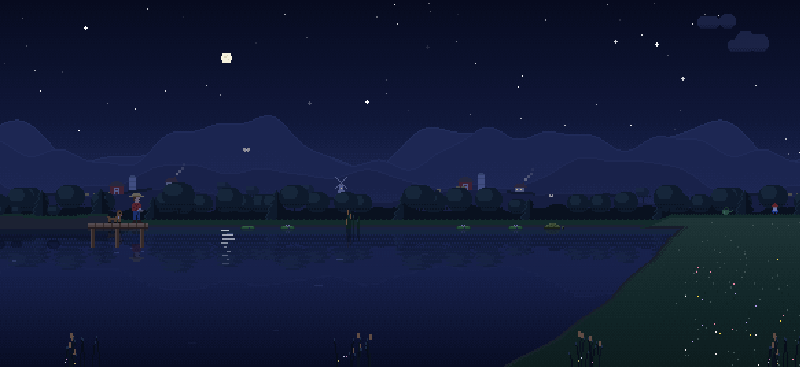
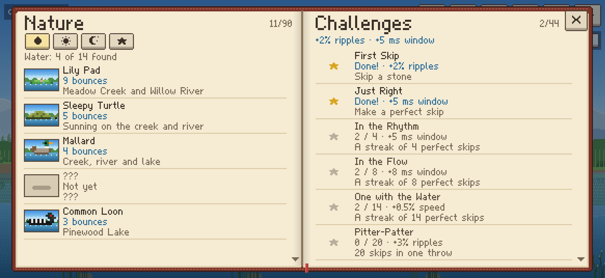
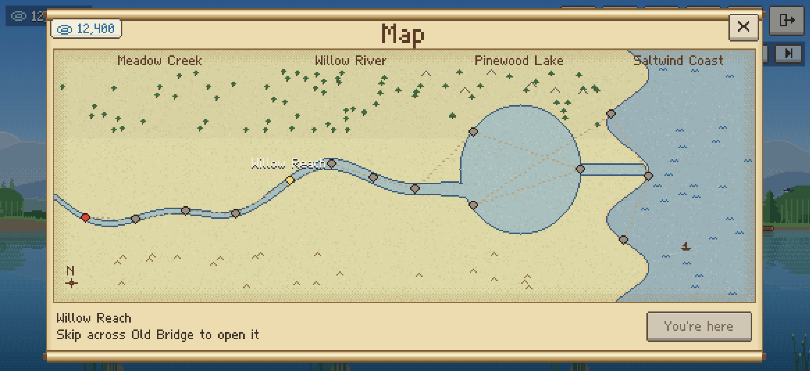

Swipe to throw a flat stone across still water, and tap just as it touches down for a perfect skip. Bounce off lily pads and sleepy turtles, earn ripples, pick better stones, and find your way from Meadow Creek's mill pond out to the open sea.
Swipe
Flick across the water. Faster goes further, and a low, flat throw skips best, just like the real thing.
Tap
Tap as the stone kisses the water for a perfect skip. String them together into a streak.
Keep going
Make it across and the stone tumbles on over the land, knocking things over. When it stops, kick it on.




A little world to wander
- Fourteen spots in four regions: Meadow Creek, Willow River, Pinewood Lake and Saltwind Coast. Skip across one to open the next.
- Real time of day: the light follows your clock, from soft dawns to starry nights, and the weather changes through the day: sun, passing clouds, rain, fog, and snow at the lake.
- A nature journal of 90 creatures and curiosities to find and photograph, from mallards and otters to the northern lights, and a few legends that only turn up at the right moment.
- 44 challenges, each with a small bonus that lasts.
- A companion on the dock: a dog or a cat to start, and more to adopt, up to a very well-behaved pet rock.
- 48 hats, pet outfits and stone trails to win and wear.
- 21 gentle songs and the sounds of each place: crickets, loons, waves and rain.
- Twelve languages, and a text size that suits you.
- Plays offline. No ads, no accounts, nothing collected.


Free to play
Meadow Creek is free, all four of its spots. One purchase, the Full Game, opens Willow River, Pinewood Lake and Saltwind Coast, and adds idle mode (it skips stones for you while you watch), more pets to adopt, rarer wildlife, no limit on ripples, and a thank-you hat, collar and trail.